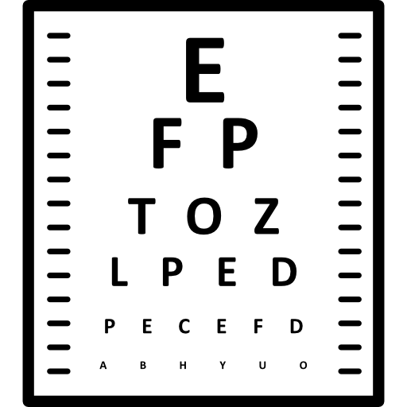
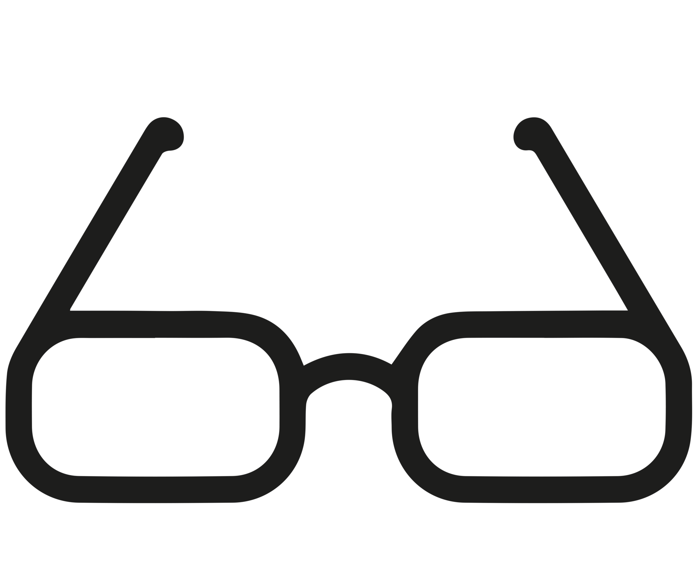
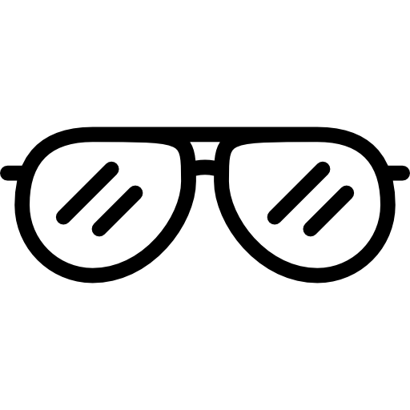

Eye Exams
At Today's Vision, a comprehensive eye exam includes a thorough assessment of your vision and eye health. During the exam, our optometrist will evaluate your visual acuity, check for refractive errors like nearsightedness, farsightedness, and astigmatism, and determine if you need prescription glasses or contact lenses. Additionally, the exam involves inspecting the health of your eyes, including checking for signs of glaucoma, cataracts, macular degeneration, and other eye conditions.
We recommend scheduling an eye exam at least once a year, or more frequently if you have a history of eye conditions, wear corrective lenses, or experience any changes in your vision. Eye exams are essential for maintaining optimal vision and detecting any potential issues early on.

Eyeglasses
At our offices, we offer a diverse selection of high-quality eyeglasses to suit every style and need. Our collection features the latest trends and classic designs from top brands, ensuring you'll find the perfect pair that complements your look and enhances your vision.
From fashionable frames to durable, everyday wear, our eyeglasses are crafted with precision and comfort in mind. We provide expert fitting to ensure optimal lens placement and frame comfort, and our knowledgeable staff is here to help you choose lenses that best fit your lifestyle, whether you need single vision, bifocal, or progressive lenses.

Lenses
We provide expert lens crafting services tailored to your specific vision needs. Our state-of-the-art technology ensures precision in every lens we make, from single vision to bifocals and progressive lenses.
Our skilled technicians work with a variety of lens materials and coatings, including anti-reflective, scratch-resistant, and UV protection options, to enhance your visual clarity and comfort. We take great care in ensuring that your lenses are perfectly matched to your prescription and fitted to your chosen frames for optimal performance. Whether you need lenses for daily wear, specialized needs, or fashion-forward designs, our team is dedicated to delivering high-quality, customized lenses that meet your exact requirements.
Contact Lenses
We offer professional contact lens fitting services to ensure you find the perfect fit for your eyes and lifestyle. Our comprehensive fitting process involves assessing your eye shape, corneal curvature, and prescription to select the most suitable type of contact lenses, whether they're daily disposables, bi-weekly, monthly, or specialized lenses for astigmatism or presbyopia.
Our optometrists provide personalized guidance on proper lens insertion, removal, and care techniques to ensure a comfortable and healthy wearing experience. We also offer trials of various contact lenses to help you find the ideal option that provides clear vision and maximum comfort. With our expert fitting and ongoing support, you can enjoy the convenience and freedom of contact lenses with confidence.

Eye Conditions
We provide a range of advanced diagnostic tests to accurately identify and manage various eye conditions. Our comprehensive evaluation includes visual acuity tests to measure vision sharpness and detect refractive errors, tonometry to screen for glaucoma by checking intraocular pressure, and retinal imaging to detect conditions like macular degeneration and diabetic retinopathy. We also perform slit lamp examinations for a magnified view of the eye’s structures to identify issues with the cornea, lens, and other parts of the eye, as well as performing optical coherence tomography (OCT) for cross-sectional images of the retina to diagnose and monitor retinal conditions. These thorough tests enable us to deliver precise diagnoses and personalized treatment plans, ensuring the best possible care for your eye health.
LASIK
We offer comprehensive evaluations to determine if you are a candidate for LASIK eye surgery and provide detailed information about the procedure. Our thorough assessment includes tests to measure your corneal thickness, assess your eye’s overall health, evaluate your visual acuity, and examine your refractive error and ensure there are no underlying conditions that could affect the outcome of the surgery.
If you are deemed a suitable candidate for LASIK, we guide you through the entire process, from pre-surgery consultations to the procedure itself. During the LASIK procedure, our skilled ophthalmologists use advanced laser technology to reshape the cornea, correcting refractive errors such as nearsightedness, farsightedness, and astigmatism to enhance your vision.